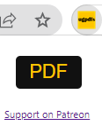
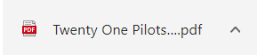

How it works:
- Download the extension through Chrome.
- Navigate to the tab you want to download as a PDF on ultimate-guitar.com. Make sure you have adjusted the key to your satisfaction, if necessary.
- Click the UGPDFs Chrome extension icon:
 - Click the PDF button. Your PDF version of the guitar tab should start downloading:
 - Say thanks by supporting me on Patreon :)